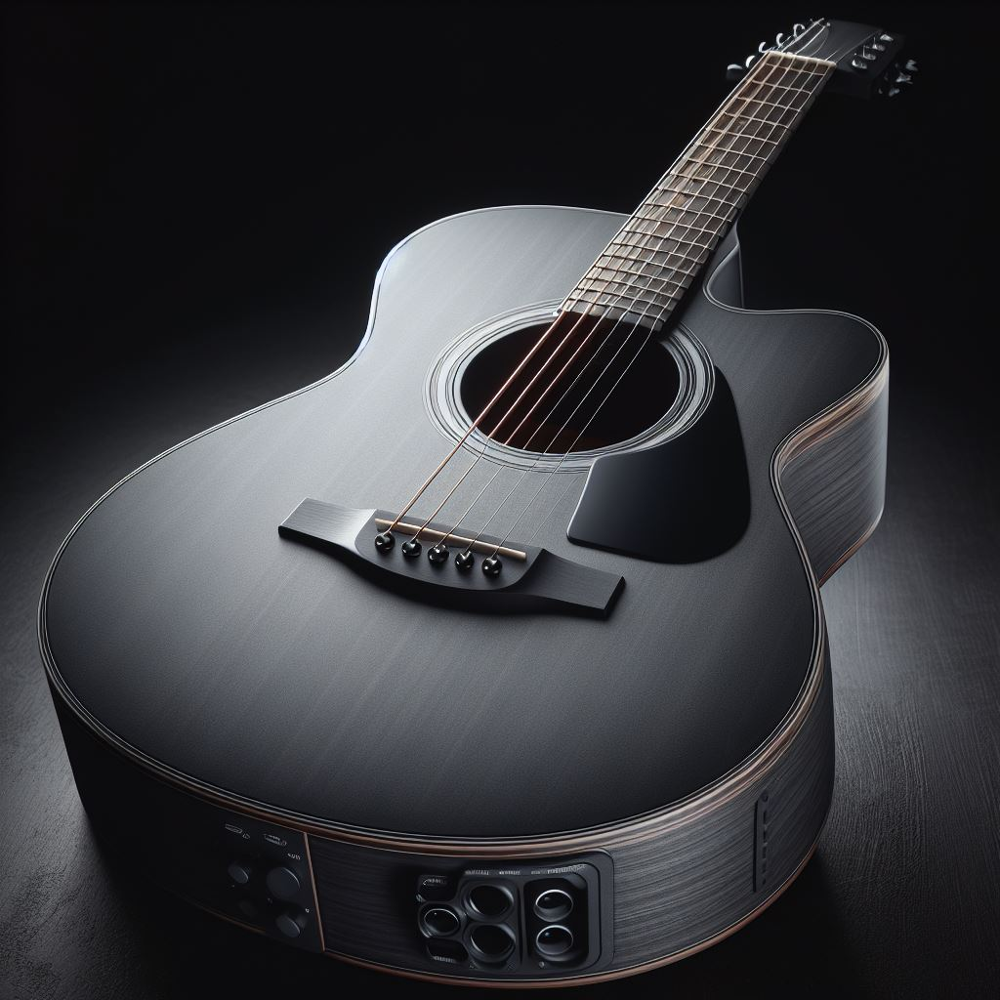
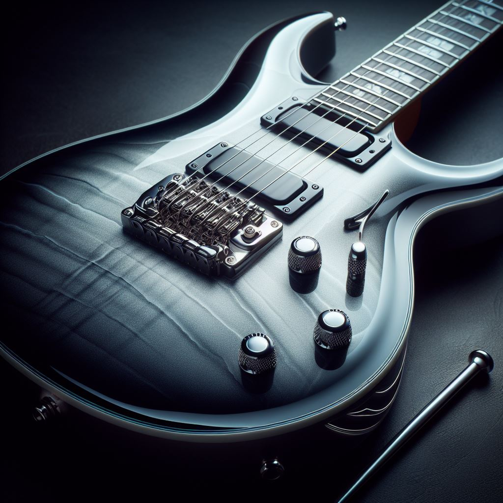

Acústica
La guitarra acústica es un instrumento musical de cuerda pulsada que produce sonido mediante la vibración de las cuerdas de acero o nylon, que se amplifica a través de una caja de resonancia hueca. No requiere de ningún tipo de amplificación eléctrica para ser escuchada y es utilizada en una amplia variedad de géneros musicales, desde el folk hasta el pop y el rock.
Eléctrica
La guitarra eléctrica es un instrumento musical de cuerda que utiliza pastillas magnéticas para convertir las vibraciones de las cuerdas en señales eléctricas, las cuales son amplificadas y procesadas por un amplificador para producir sonido. Se caracteriza por su diseño delgado y su capacidad para producir una amplia gama de tonos mediante el uso de efectos y pedales.
Clásica
La guitarra clásica, también conocida como guitarra española, es un instrumento musical de cuerda similar a la guitarra acústica, pero con cuerdas de nylon en lugar de acero. Se utiliza principalmente en la interpretación de música clásica y flamenco, aunque también se encuentra en otros estilos musicales. Su diseño y técnica de ejecución son distintivos, con un enfoque en la precisión y la expresión musical.